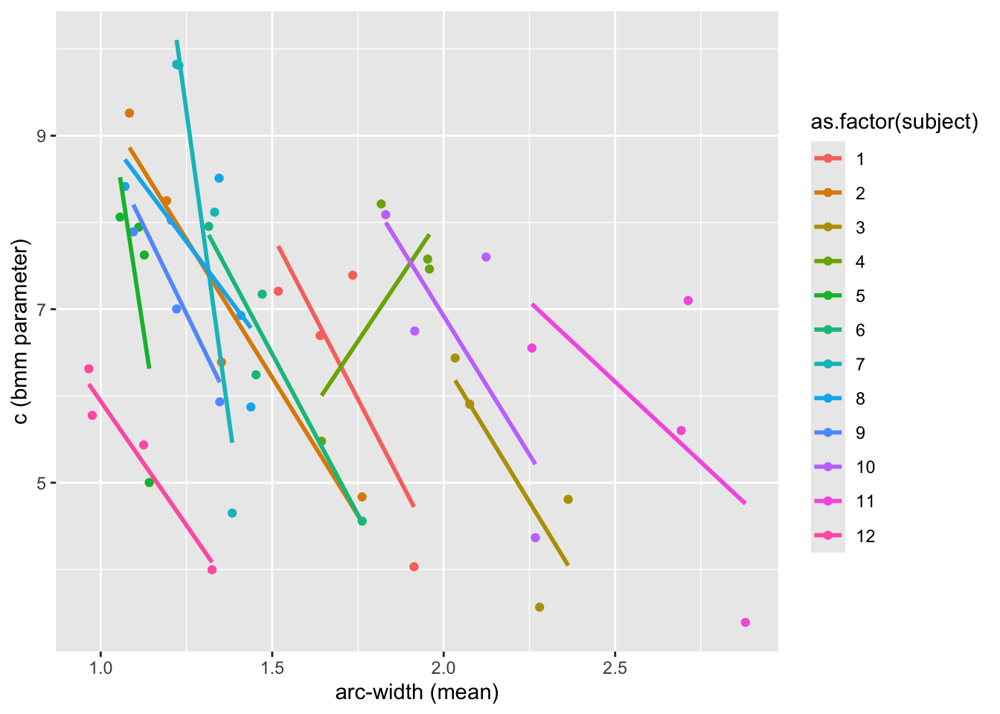
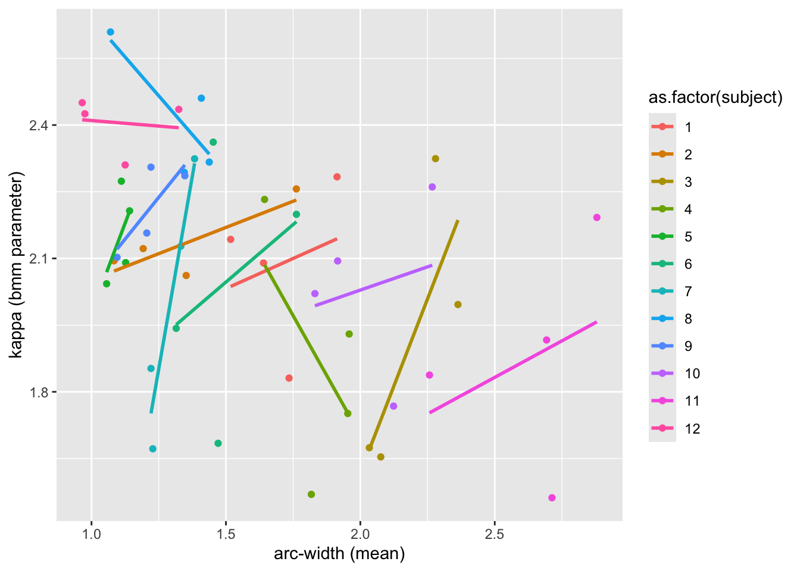
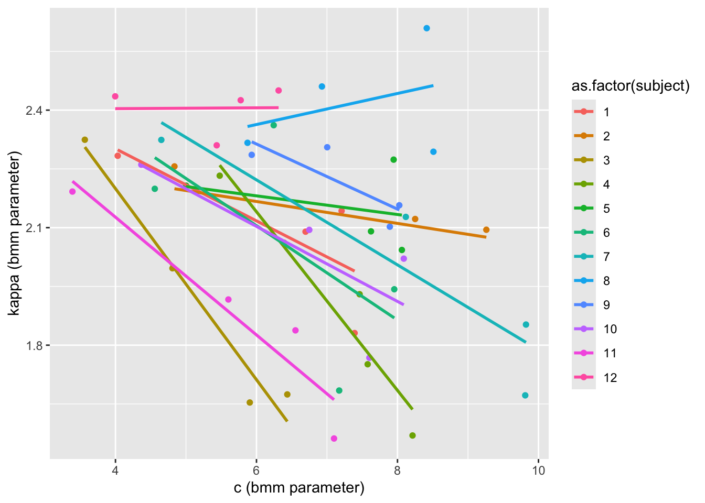
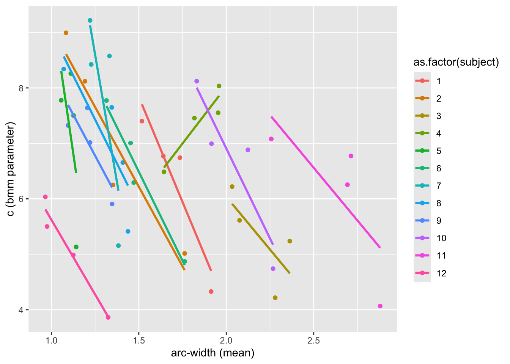
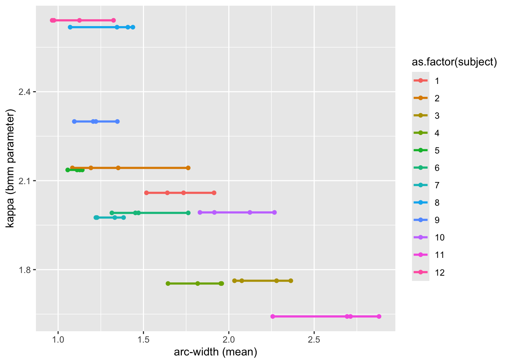
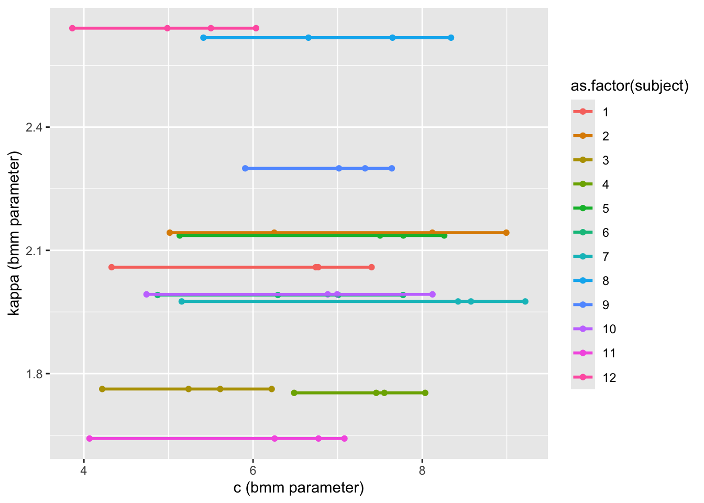

Correlations: bmm vs arc-width
Read the data and the model fit:
tar_load("honig_data")
tar_load("honig_bmm_fit_by_subject_and_session")
tar_load("honig_bmm_fit_kappa_by_subject_c_by_session")
tar_source()
fit1 <- honig_bmm_fit_by_subject_and_session
fit2 <- honig_bmm_fit_kappa_by_subject_c_by_sessionCalculate the arc-width per subject and session:
arc_width <- honig_data |>
group_by(subject, session) |>
summarize(arc_med = median(arc),
arc_mean = mean(arc))`summarise()` has grouped output by 'subject'. You can override using the
`.groups` argument.Correlations with model 1
It used the following formula:
fit1$bmm$user_formulac ~ 0 + session + (0 + session || subject)
kappa ~ 0 + session + (0 + session || subject)Extract the bmm parameters for each subject and session:
bmm_params <- fit1 |>
get_subject_parameters() |>
mutate(subject = row_number()) |>
pivot_longer(
cols = -subject,
names_to = c(".value", "session"),
names_pattern = "(.*)_(.*)"
) |>
mutate(session = stringr::str_remove(session, "session"),
session = as.numeric(session))Merge the arc-width and bmm parameters:
# A tibble: 6 × 6
# Groups: subject [2]
subject session arc_med arc_mean c kappa
<dbl> <dbl> <dbl> <dbl> <dbl> <dbl>
1 1 1 1.68 1.91 4.03 2.28
2 1 2 1.56 1.73 7.39 1.83
3 1 3 1.34 1.52 7.21 2.14
4 1 4 1.43 1.64 6.70 2.09
5 2 1 1.56 1.76 4.84 2.26
6 2 2 1.07 1.19 8.25 2.12Plot the correlations:
results |>
ggplot(aes(arc_mean, c, color = as.factor(subject))) +
geom_point() +
geom_smooth(method = "lm", se = FALSE) +
labs(x = "arc-width (mean)", y = "c (bmm parameter)")`geom_smooth()` using formula = 'y ~ x'
results |>
ggplot(aes(arc_mean, kappa, color = as.factor(subject))) +
geom_point() +
geom_smooth(method = "lm", se = FALSE) +
labs(x = "arc-width (mean)", y = "kappa (bmm parameter)")`geom_smooth()` using formula = 'y ~ x'
results |>
ggplot(aes(c, kappa, color = as.factor(subject))) +
geom_point() +
geom_smooth(method = "lm", se = FALSE) +
labs(x = "c (bmm parameter)", y = "kappa (bmm parameter)")`geom_smooth()` using formula = 'y ~ x'
Correlations:
cor(results$arc_mean, results$c)[1] -0.4356803cor(results$arc_mean, results$kappa)[1] -0.4229615cor(results$c, results$kappa)[1] -0.3721625R squared:
Call:
lm(formula = arc_mean ~ c, data = results)
Residuals:
Min 1Q Median 3Q Max
-0.75107 -0.30722 -0.08523 0.35557 1.16427
Coefficients:
Estimate Std. Error t value Pr(>|t|)
(Intercept) 2.5019 0.2802 8.928 1.32e-11 ***
c -0.1343 0.0409 -3.283 0.00197 **
---
Signif. codes: 0 '***' 0.001 '**' 0.01 '*' 0.05 '.' 0.1 ' ' 1
Residual standard error: 0.4484 on 46 degrees of freedom
Multiple R-squared: 0.1898, Adjusted R-squared: 0.1722
F-statistic: 10.78 on 1 and 46 DF, p-value: 0.001967
Call:
lm(formula = arc_mean ~ kappa, data = results)
Residuals:
Min 1Q Median 3Q Max
-0.72157 -0.35257 -0.04494 0.22304 1.35106
Coefficients:
Estimate Std. Error t value Pr(>|t|)
(Intercept) 3.3016 0.5393 6.122 1.9e-07 ***
kappa -0.8087 0.2555 -3.166 0.00274 **
---
Signif. codes: 0 '***' 0.001 '**' 0.01 '*' 0.05 '.' 0.1 ' ' 1
Residual standard error: 0.4514 on 46 degrees of freedom
Multiple R-squared: 0.1789, Adjusted R-squared: 0.161
F-statistic: 10.02 on 1 and 46 DF, p-value: 0.002744
Call:
lm(formula = arc_mean ~ c + kappa, data = results)
Residuals:
Min 1Q Median 3Q Max
-0.67389 -0.24659 -0.03257 0.28981 0.70294
Coefficients:
Estimate Std. Error t value Pr(>|t|)
(Intercept) 5.7427 0.5323 10.788 4.58e-14 ***
c -0.2121 0.0318 -6.672 3.13e-08 ***
kappa -1.2986 0.1973 -6.582 4.26e-08 ***
---
Signif. codes: 0 '***' 0.001 '**' 0.01 '*' 0.05 '.' 0.1 ' ' 1
Residual standard error: 0.3236 on 45 degrees of freedom
Multiple R-squared: 0.5872, Adjusted R-squared: 0.5689
F-statistic: 32.01 on 2 and 45 DF, p-value: 2.259e-09Correlations with model 2
It used the following formula:
fit2$bmm$user_formulac ~ 0 + session + (0 + session || subject)
kappa ~ 1 + (1 | subject)Extract the bmm parameters for each subject and session:
bmm_params2 <- fit2 |>
get_subject_parameters() |>
mutate(subject = row_number()) |>
pivot_longer(
cols = starts_with("c"),,
names_to = c(".value", "session"),
names_pattern = "(.*)_(.*)"
) |>
mutate(session = stringr::str_remove(session, "session"),
session = as.numeric(session)) |>
rename(kappa = kappa_Intercept)Merge the arc-width and bmm parameters:
# A tibble: 6 × 6
# Groups: subject [2]
subject session arc_med arc_mean kappa c
<dbl> <dbl> <dbl> <dbl> <dbl> <dbl>
1 1 1 1.68 1.91 2.06 4.33
2 1 2 1.56 1.73 2.06 6.74
3 1 3 1.34 1.52 2.06 7.40
4 1 4 1.43 1.64 2.06 6.77
5 2 1 1.56 1.76 2.14 5.02
6 2 2 1.07 1.19 2.14 8.12Plot the correlations:
results2 |>
ggplot(aes(arc_mean, c, color = as.factor(subject))) +
geom_point() +
geom_smooth(method = "lm", se = FALSE) +
labs(x = "arc-width (mean)", y = "c (bmm parameter)")`geom_smooth()` using formula = 'y ~ x'
results2 |>
ggplot(aes(arc_mean, kappa, color = as.factor(subject))) +
geom_point() +
geom_smooth(method = "lm", se = FALSE) +
labs(x = "arc-width (mean)", y = "kappa (bmm parameter)")`geom_smooth()` using formula = 'y ~ x'
results2 |>
ggplot(aes(c, kappa, color = as.factor(subject))) +
geom_point() +
geom_smooth(method = "lm", se = FALSE) +
labs(x = "c (bmm parameter)", y = "kappa (bmm parameter)")`geom_smooth()` using formula = 'y ~ x'
Correlations:
cor(results2$arc_mean, results2$c)[1] -0.3671312cor(results2$arc_mean, results2$kappa)[1] -0.7281713cor(results2$c, results2$kappa)[1] -0.04146123R squared:
Call:
lm(formula = arc_mean ~ c, data = results2)
Residuals:
Min 1Q Median 3Q Max
-0.77828 -0.31412 -0.08855 0.35743 1.12663
Coefficients:
Estimate Std. Error t value Pr(>|t|)
(Intercept) 2.47694 0.33187 7.464 1.85e-09 ***
c -0.13148 0.04912 -2.677 0.0103 *
---
Signif. codes: 0 '***' 0.001 '**' 0.01 '*' 0.05 '.' 0.1 ' ' 1
Residual standard error: 0.4634 on 46 degrees of freedom
Multiple R-squared: 0.1348, Adjusted R-squared: 0.116
F-statistic: 7.166 on 1 and 46 DF, p-value: 0.01026
Call:
lm(formula = arc_mean ~ kappa, data = results2)
Residuals:
Min 1Q Median 3Q Max
-0.5141 -0.2843 0.0093 0.2374 0.7506
Coefficients:
Estimate Std. Error t value Pr(>|t|)
(Intercept) 4.0687 0.3452 11.786 1.70e-15 ***
kappa -1.1810 0.1639 -7.206 4.48e-09 ***
---
Signif. codes: 0 '***' 0.001 '**' 0.01 '*' 0.05 '.' 0.1 ' ' 1
Residual standard error: 0.3414 on 46 degrees of freedom
Multiple R-squared: 0.5302, Adjusted R-squared: 0.52
F-statistic: 51.92 on 1 and 46 DF, p-value: 4.483e-09
Call:
lm(formula = arc_mean ~ c + kappa, data = results2)
Residuals:
Min 1Q Median 3Q Max
-0.61447 -0.16325 -0.05163 0.17352 0.59401
Coefficients:
Estimate Std. Error t value Pr(>|t|)
(Intercept) 5.06779 0.35288 14.361 < 2e-16 ***
c -0.14254 0.02983 -4.779 1.92e-05 ***
kappa -1.20781 0.13509 -8.941 1.54e-11 ***
---
Signif. codes: 0 '***' 0.001 '**' 0.01 '*' 0.05 '.' 0.1 ' ' 1
Residual standard error: 0.2812 on 45 degrees of freedom
Multiple R-squared: 0.6884, Adjusted R-squared: 0.6745
F-statistic: 49.7 on 2 and 45 DF, p-value: 4.045e-12